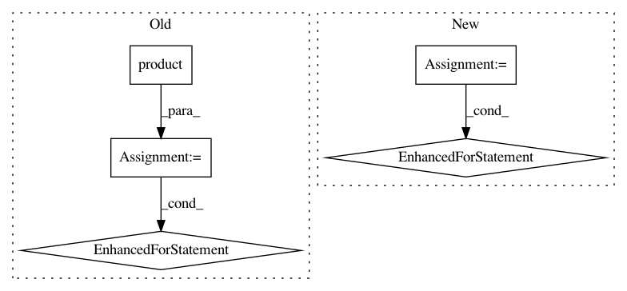

94f2c9d4bd78723440418b6ea914012d83b00bed,tests/test_utilities.py,,test_generate_predictions,#,444
Before Change
def test_generate_predictions():
for (use_feature_hashing, use_threshold, test_on_subset, all_probabilities,
string_labels) in product(*[[True, False], [True, False],
[True, False], [True, False],
[True, False]]):
if use_threshold and all_probabilities:
continue
yield (check_generate_predictions, use_feature_hashing,
use_threshold, test_on_subset, all_probabilities,
string_labels)
def test_generate_predictions_file_header():
for (use_threshold, all_probabilities, string_labels) in \
product(*[[True, False], [True, False], [True, False]]):
if use_threshold and all_probabilities:
After Change
def test_generate_predictions():
for (use_regression,
string_labels,
num_labels,
use_probability,
use_pos_label_str,
test_on_subset,
use_threshold,
predict_labels,
use_stdout,
multiple_input_files) in product([True, False],
[True, False],
[2, 4],
[True, False],
[True, False],
[True, False],
[True, False],
[True, False],
[True, False],
[True, False]):
// skip testing conditions that will raise exceptions
// in `generate_predictions`
if (use_threshold and num_labels != 2 or
use_threshold and predict_labels or
use_regression and string_labels):
continue
yield (check_generate_predictions,
use_regression,
string_labels,
num_labels,
use_probability,
use_pos_label_str,
test_on_subset,
use_threshold,
predict_labels,
use_stdout,
multiple_input_files)
def test_generate_predictions_console_bad_input_ext():
lc = LogCapture()
lc.begin()
In pattern: SUPERPATTERN
Frequency: 5
Non-data size: 5
Instances
Project Name: EducationalTestingService/skll
Commit Name: 94f2c9d4bd78723440418b6ea914012d83b00bed
Time: 2019-10-18
Author: nmadnani@ets.org
File Name: tests/test_utilities.py
Class Name:
Method Name: test_generate_predictions
Project Name: arviz-devs/arviz
Commit Name: e7baa93f4f397c2955cb30c83bf483f26e67f2f8
Time: 2018-10-08
Author: ahartikainen@users.noreply.github.com
File Name: arviz/stats/diagnostics.py
Class Name:
Method Name: _neff_ufunc
Project Name: arviz-devs/arviz
Commit Name: e7baa93f4f397c2955cb30c83bf483f26e67f2f8
Time: 2018-10-08
Author: ahartikainen@users.noreply.github.com
File Name: arviz/stats/diagnostics.py
Class Name:
Method Name: _rhat_ufunc
Project Name: stanford-mast/nn_dataflow
Commit Name: 03bed998799d46e231bd3a53899ad77a80e93684
Time: 2017-06-25
Author: mgao12@stanford.edu
File Name: nn_dataflow/LoopBlocking.py
Class Name:
Method Name: gen_loopblocking
Project Name: scipy/scipy
Commit Name: c99fb73fa62aa3895ddded5603c44ec2e64f33ab
Time: 2018-03-30
Author: github@stsievert.com
File Name: benchmarks/benchmarks/signal.py
Class Name: Convolve
Method Name: setup